1. Installation:
Git for Windows
- To download the Git installer, visit the Git's official site and go to the download page.
- Click on the downloaded installer file and select yes to continue. The installation begins.
- Default components are automatically selected in this step. You can also choose your required part.
- The default Git command-line options are selected automatically. You can choose your preferred choice. Click next to continue.
- The default transport backend options are selected in this step. Click next to continue.
- Select your required line ending option and click next to continue.
- Select preferred terminal emulator and click next to continue.
- This is the last step that provides some extra features like system caching, credential management, and symbolic link. Select the required features and click next.
- The files are being extracted.
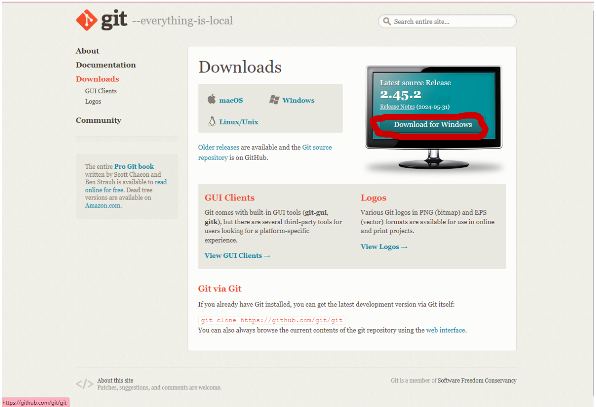
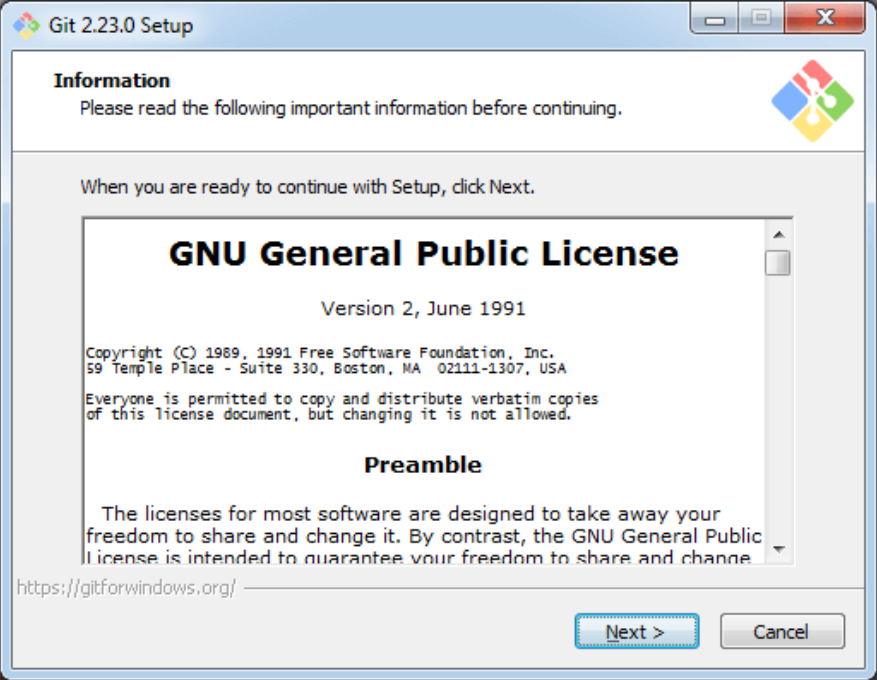
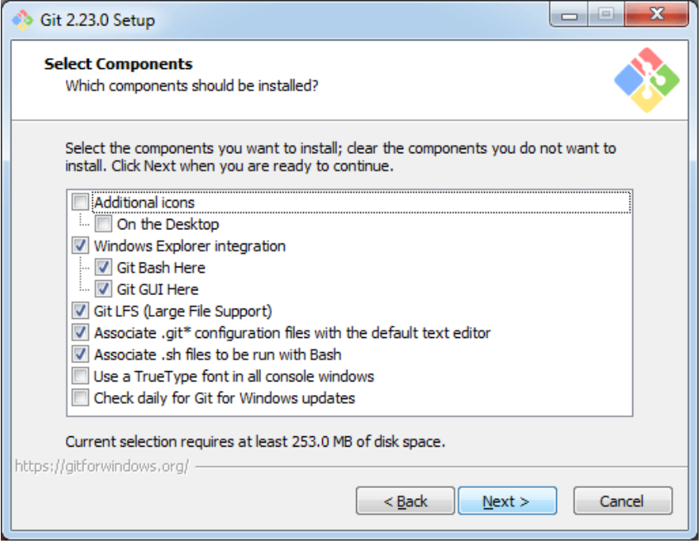
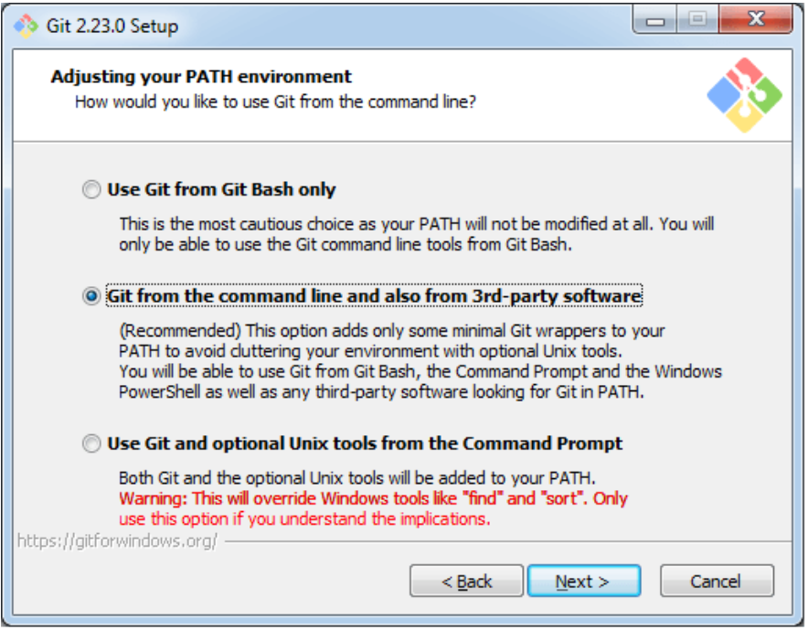
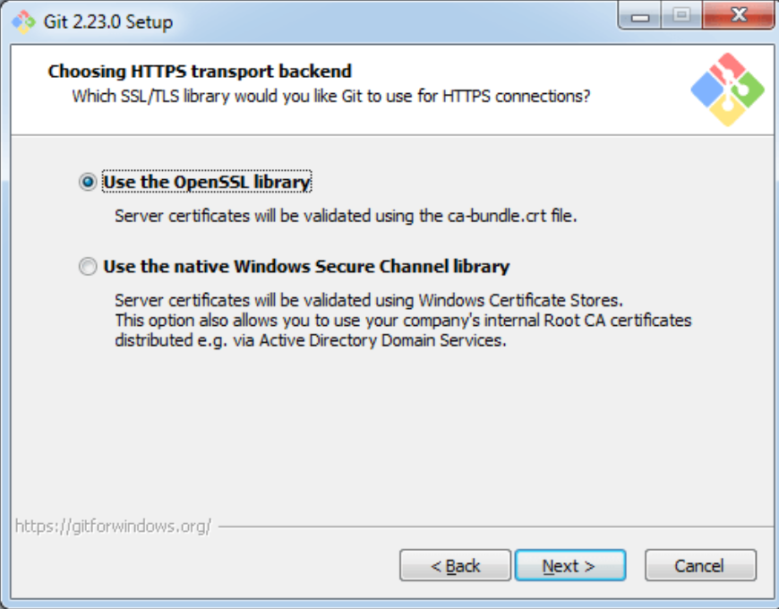
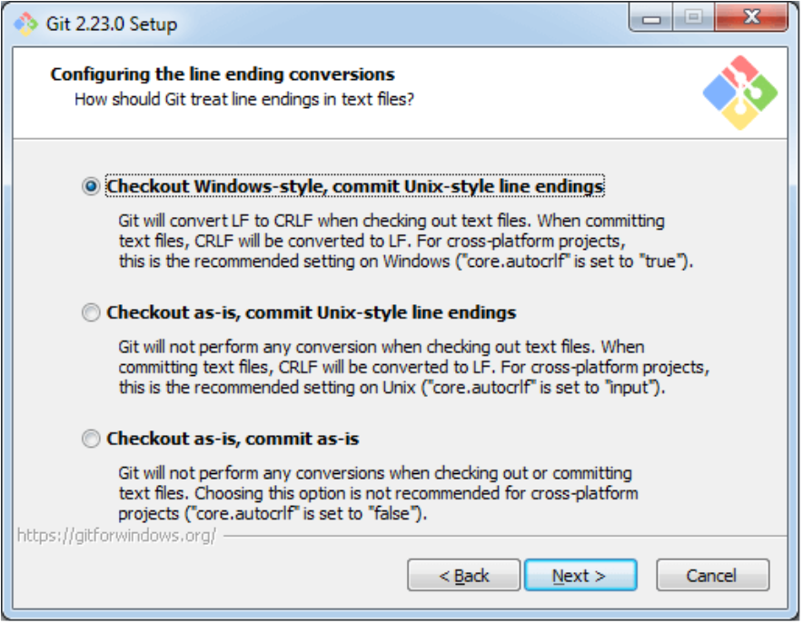
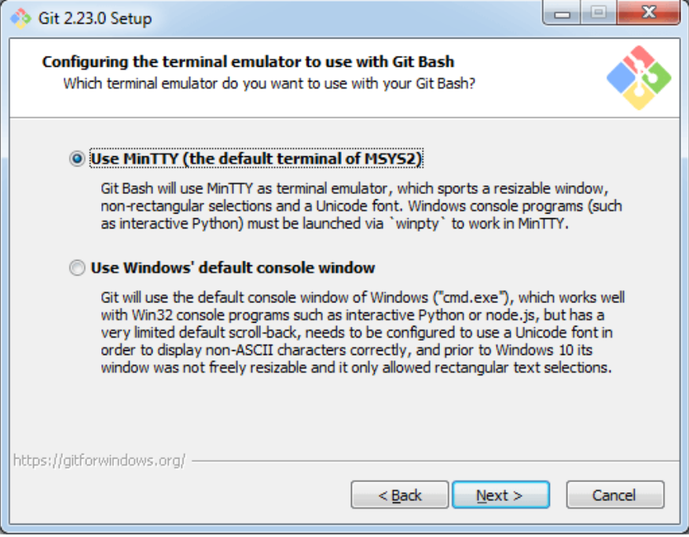
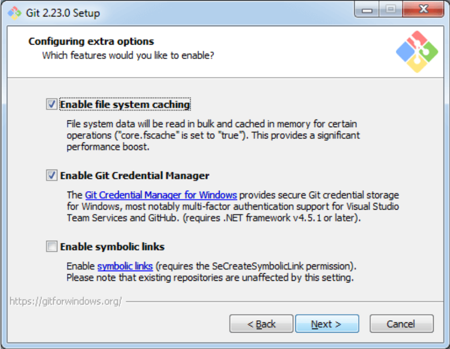
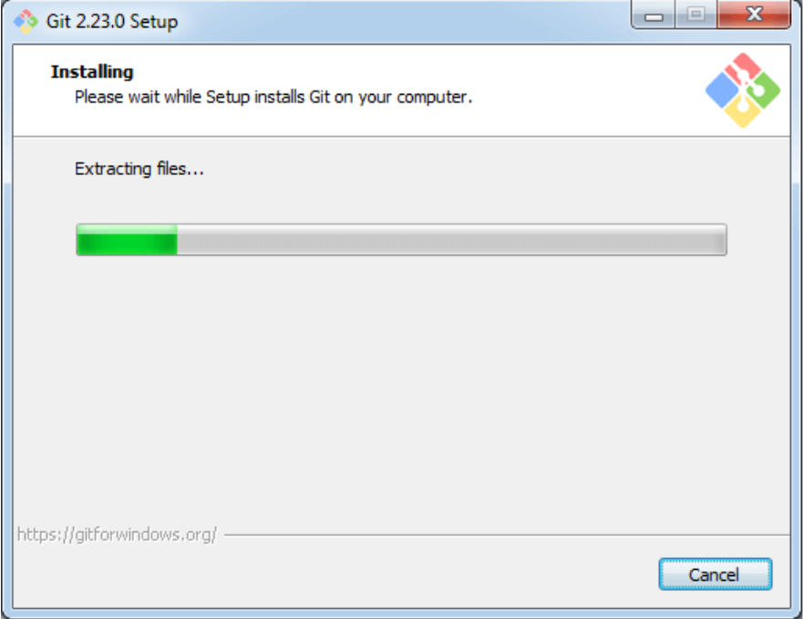
The Git Bash looks like as
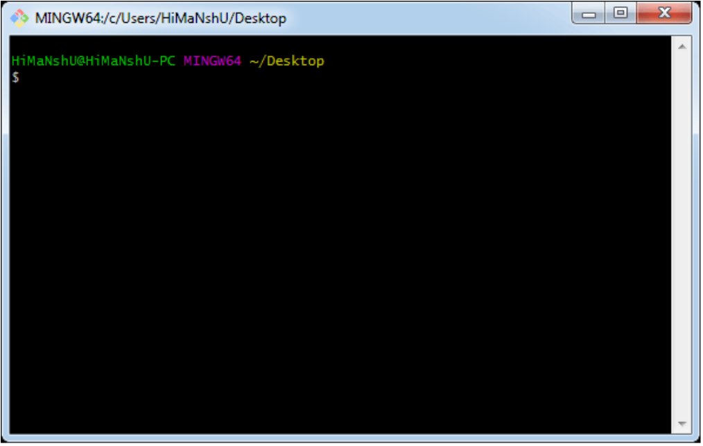
Git for Linux (Ubuntu)
- Start the general OS and package update:
$ sudo apt-get update
- Install Git:
$ sudo apt-get install git-core
- Confirm Git installation:
$ sudo git --version
- Configure Git for the first use:
$ sudo git config --global user.name "Harsh" $ sudo git config --global user.email "Harsh@xyz"
2. Sign Up or Sign In in GitHub account
Step 1: Creating an account
To sign up for an account on GitHub.com, navigate to GitHub and follow the prompts. For more information, see Creating a strong password.
For Sign Up
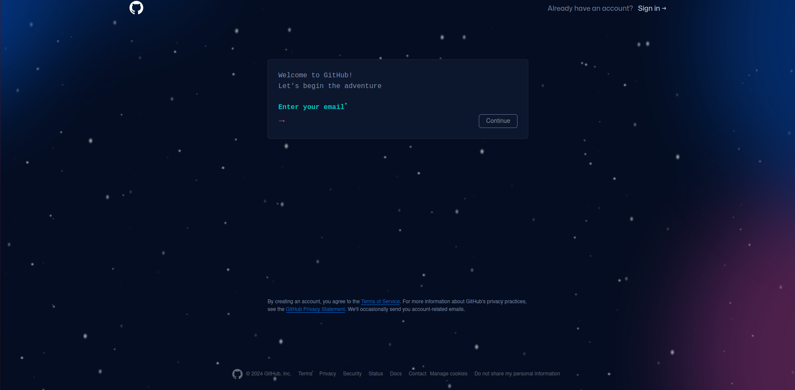
For Sign In
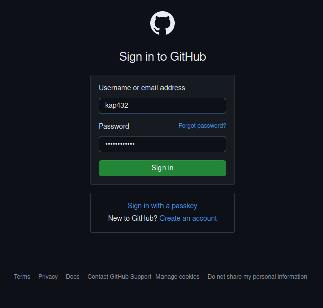
Step 2: Configuring two-factor authentication using a TOTP app
- Download a TOTP app of your choice to your phone or desktop.
- In the upper-right corner of any page on GitHub, click your profile photo, then click Settings.
- In the "Access" section of the sidebar, click Password and authentication.
- In the "Two-factor authentication" section of the page, click Enable two-factor authentication.
- Under "Scan the QR code", do one of the following:
- Scan the QR code with your mobile device's app. After scanning, the app displays a six-digit code that you can enter on GitHub Enterprise Server.
- If you can't scan the QR code, click the setup key to see a code, the TOTP secret, that you can manually enter in your TOTP app instead.
- The TOTP application saves your account on your GitHub Enterprise Server instance and generates a new authentication code every few seconds. On GitHub Enterprise Server, type the code into the field under "Verify the code from the app".
- Under "Save your recovery codes", click Download to download your recovery codes to your device. Save them to a secure location.
- After saving your two-factor recovery codes, click I have saved my recovery codes to enable two-factor authentication for your account.
- Optionally, configure additional 2FA methods to reduce your risk of account lockout. For more details, see Configuring two-factor authentication using a security key.
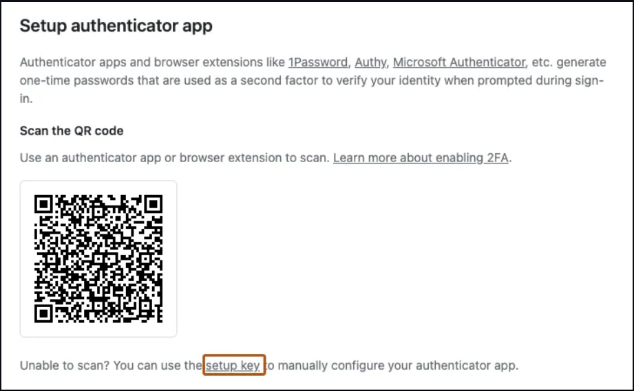
3. Setup in Windows
- Set Global Username:
$ git config --global user.name "Harsh Shah"
- Set Global Email:
$ git config --global user.email "harsh@xyz.com"
- Get Global Settings:
$ git config --list
4. Basic Git Commands:
- Git Configuration:
$ git config --global user.name "Harsh" $ git config --global user.email "Harsh@xyz"
- Initialize Git in the Project Folder:
$ git init
- Add Files:
$ git add [file name]
- Commit Files:
$ git commit -m "Message"
- Push to Remote Repository:
$ git push
- Clone Repository:
$ git clone [link]
- Check Status:
$ git status
5. Branch & Merge:
- List All Branches:
$ git branch
- Create New Branch:
$ git branch [branch name]
- Switch to New Branch:
$ git checkout [branch name]
- Merge Branch to Master:
$ git merge [alias]/[branch]
- Show Commit History:
$ git log
6. Share & Update:
- Push Local Branch to Remote Repository:
$ git push [alias] [branch]
- Pull Changes from Remote Repository:
$ git pull
- Add a Remote Repository:
$ git remote add [alias] [url]
- Fetch Changes from a Remote Repository:
$ git fetch [alias]
- PMerge Remote Branch into Current Branch:
$ git merge [alias]/[branch]